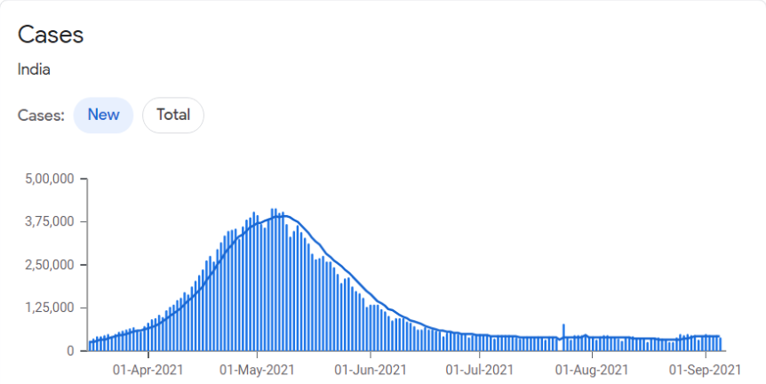
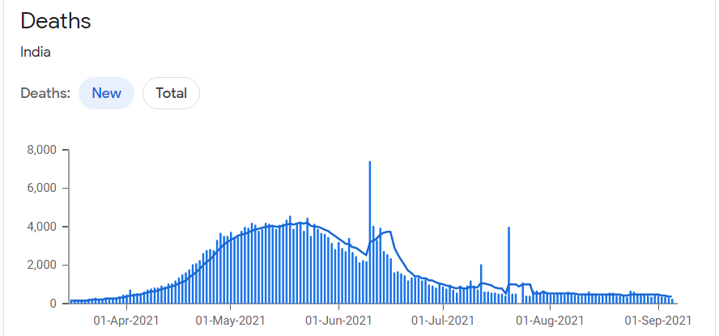

Coronavirus disease 2019 (COVID-19) is a contagious disease caused by
severe acute
respiratory syndrome coronavirus two
The first known case was identified in
Wuhan, China, in December 2019.The disease has since spread worldwide, leading to an
ongoing pandemic.The COVID-19 pandemic, also known as the coronavirus pandemic, is an ongoing global
pandemic of coronavirus disease 2019 (COVID-19) caused by severe acute respiratory
syndrome coronavirus 2 (SARS-CoV-2).Symptoms of COVID-19 are variable, but often include fever,cough,
headache,fatigue,
breathing difficulties, and loss of smell and taste.Symptoms may begin one to
fourteen days after exposure to the virus.At least a third of people who are infected do not
develop noticeable symptoms.
National Doctor's Day is celebrated across India on July 1 to mark the birth anniversary, which is
incidentally also the death anniversary.This year the occasion becomes more significant, considering how
the medical
fraternity has been working day and night tirelessly during the Covid-19 pandemic.
In the absence of proper medical facilities and infrastructure during the second wave of the
deadly virus, doctors were indeed on the frontline battling all odds, risking their own lives,
working in never-ending shifts, dealing with the crumbling health sector, facing physical
assaults, dealing with emotional pressures, fear of contracting the virus to their families, to say
the least. However, despite the challenges, the medicos never stopped rendering their services
to humanity when the country needed them the most. Be it professional or personal, it has been
quite a problematic experience for the last one and a half years.
Needless to say, doctors, nurses and people working in health-care sectors are
particularly
vulnerable to the highly infectious disease.In response to the global pandemic, the
under-resourced doctors are facing unprecedented challenges.The list of the sleep-deprived heroes includes
doctors, nurses, medical cleaners, pathologists, paramedics, ambulance drivers, and health-care administrators.
In the fight against coronavirus, the brave medical army stands strong with thermometers, stethoscopes, and
ventilators as their weapons.
Not to forget, medical researchers are working day in and night out against all odds, hoping to find the antidote to the disease.Since the coronavirus outbreak, health-care professionals have not only experienced the gratification of healing patients and saving their lives but have also lost many battles along the way. Among the several lessons this coronavirus pandemic has been teaching us, the biggest one is to find ways to sufficiently invest in the better and more efficient medical fraternity and give medical professionals the respect, compensation and infrastructure that they truly deserve once this crisis is over. Moreover, the world needs to work towards advancement in medical research and technology. Nothing will be a greater tribute to the health-care workers than this.That being said, we'd now like to highlight the heroic efforts of some courageous and inspiring doctors from across the globe who lost their lives while saving the lives of COVID-19 patients.

The second wave of COVID-19 in India has had severe consequences in the
form of spiralling
cases, reduced supplies of essential treatments, and increased deaths particularly in the young
population
.Understanding why the second wave has been more dangerous than the first could
help to identify the potential areas of diagnostics to target with future control strategies.
Studies have identified various circulating double-mutant and triple-mutant strains of
SARS-CoV-2 across different regions of India, which are more pathogenic than the initial strains.
Such altered transmissibility and pathogenicity indicates evolution of the virus. The larger the
population density, the higher are the chances of viral replication, mutation, and evolution, as
suggested by Moya and colleagues. During the second wave in India, many cases of
mucormycosis, also known as
the
black fungus, have been reported in patients with diabetes and patients with COVID-19, as well as
patients who were recovering from infection.
During the second wave of COVID-19, the healthcare infrastructure in India has notably faced many challenges. Shortage of oxygen cylinders, non-availability of ICU's and beds, absence of medicines and crucial drugs like Remdesivir lead many doctors to break down while treating patients with severe symptoms.Amid the COVID crisis, numerous cases of doctors being blamed for failing to save the lives of severe patients have emerged, which has lead to violence in the form of assaults and threats against them. Last month, a doctor on COVID-19 duty in Assam was thrashed by the patient's relatives who succumbed to Covid 19.7 The reason why the younger population is now more vulnerable to SARS-CoV-2 is not apparent and beyond current scientific explanations. However, an important observation as the situation develops is that every individual appeared to have equal risk of being infected with the virus, but the ability to sustain and overcome infection was variable among individuals.
changes rapidly and may differ by location This data changes rapidly and might not reflect some cases still being reported. Some areas may not have data because they haven’t published their data or haven’t done so recently. Because data availability differs by location, date ranges for 14-day data may start on different dates. Total counts include both confirmed and probable cases in some locations. Probable cases are identified by public health officials and use criteria developed by government authorities. The number of positive tests may not be equal to the number of positive cases because of reporting differences across locations. It's also common for a single person to take more than one test. This data uses reporting from polymerase chain reaction (PCR) and antigen tests.

The rise in case numbers has been exponential in the second wave.On 18 June last year, India recorded 11,000 cases and in the next 60 days, it added 35,000 new cases on average every day. On 10 February, at the start of the second wave, India confirmed 11,000 cases - and in the next 50 days, the daily average was around 22,000 cases.But in the following 10 days, cases rose sharply with the daily average reaching 89,800.Experts say this rapid increase shows that the second wave is spreading much faster across the country. Dr A Fathahudeen, who is part of Kerala state's Covid taskforce, said the rise was not entirely unexpected given that India let its guard down when daily infections in January fell to fewer than 20,000 from a peak of over 90,000 in September.Undercounting of total cases and death figures was reported during the first wave in 2020.There have been large gaps noted between official death figures and the sudden increase in the number of bodies being cremated and buried. Several crematoria that had been in disuse earlier were brought back into operation to keep up with the demand.
A series of articles in The Hindu newspaper estimated that compared to previous years, the number of additional deaths during the pandemic (known as the 'excess mortality') was about four times the official COVID death toll in Chennai, Kolkata and Mumbai, and could be up to ten times higher in the state of Gujarat. However, it is not clear what proportion of these are due to covid and what are due to other factors such as overcrowding of medical facilities, lock-down, etc.A report by the Center for Global Development stated that the second wave of COVID-19 in India was the "worst tragedy since the partition". The report, based on serosurveys, household data and official data, pointed towards a significant underreporting of deaths, with estimates ranging from about 1 million to 6 million deaths overall, with central estimates varying between 3.4 and 4.9 million deaths.The next day Ahmedabad counted only 25 deaths. Similar disparities in numbers were seen on other days. The Gujarat government denied the under-counting and stated that they were following federal protocols.A study conducted by the University of California, Berkeley, and units of Harvard University, estimated in August 2021 that more than 16,000 excess deaths had occurred in 54 municipalities in Gujarat between March 2020 and April 2021.
The study used data from civil death registers in a subset of Gujarat's 162 municipalities. The authors stated that the "vast majority" of these deaths could likely be attributed directly to Covid-19. The government's estimate of the death toll from Covid-19 for the entire state was approximately 10,000 for the same period.Till now india has total cases and deaths are 3,30,27,621 and 38,948.During the second wave in the middle of march the cases are increased by twice of first wave. new cases and deaths occurred in second wave till now cases and deaths are 4,40,752 and 20,450 in india.